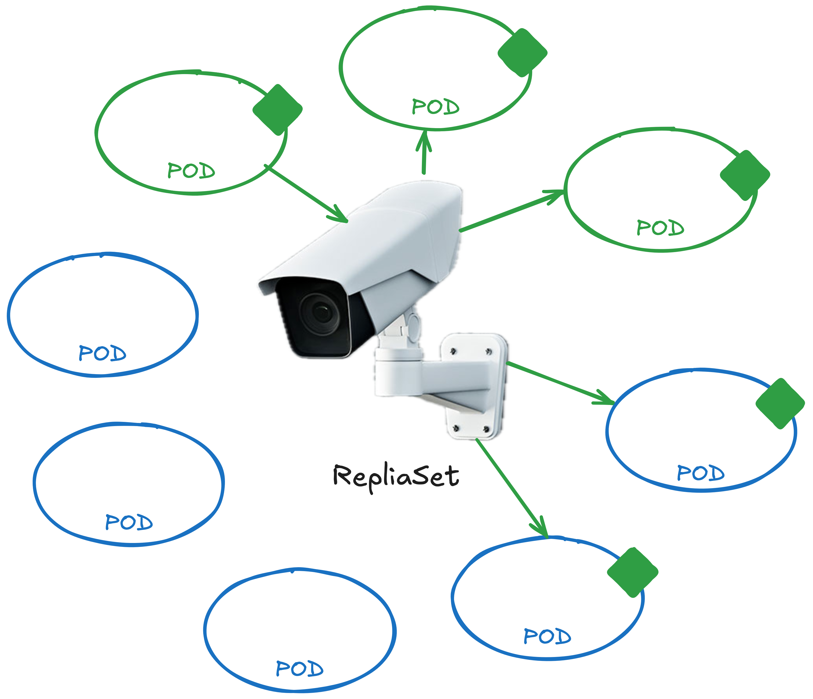

1.核心概念介绍
1. 考试形式¶
- 远程，详细要求可以在官网上找到
- 考试时可用的资源：k8s 官方文档
2. 基本概念¶
- 容器（container）：包含了 App，和运行 App 所需的所有配置与环境比起虚拟机（VM）来更高效，更灵活
-
Pod：是 k8s 中的最小单位，Pod 中的内容分享了同样的网络（Network）和存储（Storage）Pod 封装了一个或多个 container（如果是多个 container，那么大概率这些 container 包含了不同的 App，比如一个前端 App，一个数据库 App）豆荚也可翻译成 pod，所以可以联想到图片如下：
Note
Pod 常被用于扩大应用的规模，假设你的 App 访问人数在某个节假日激增，那我们就新建一个 pod，然后把同样的 App 部署到新建的 pod 上；同样的，Pod 也可以被用于降低 App 的规模
-
节点（node）：安装了 k8s 的机器，Pod 就是在 node 上跑的（节点出问题被自动关闭的时候，其上面的容器中的 App 自然也会被关闭，所以一般我们会多节点运行）
- 工作节点（worker node）：真正存放容器，干活的节点
- master 节点（master node）：也被叫做 控制面板/Control plane，监视集群中的 worker nodes，并负责对 worker nodes 上的容器进行实际编排一个 cluster 中可以有一个或者多个 master nodes
- 集群（cluster）：由一群 nodes 组成
Master node VS Worker node¶
| 特性 | 主节点 (Master Node) | 工作节点 (Worker Node) |
|---|---|---|
| 角色 | 管理和控制集群 | 运行应用工作负载（容器） |
| 主要组件 | - API Server - Scheduler (调度器) - Controller (控制器) - etcd |
- kubelet - kube-proxy - Container Runtime |
| 职责 | 处理集群状态、调度和编排 | 执行工作负载并维护容器运行时 |
| 交互 | 为用户和工具提供 Kubernetes API 接口 | 与 主节点 通信以接收工作负载分配 |
| 扩展性 | 小型到中型集群通常只需少量 主节点 以确保高可用性 | 根据工作负载需求扩展 工作节点 数量 |
| 数据 | 将集群状态存储在 etcd 中 | 不存储持久的集群状态 |
| 工作负载执行 | 不运行应用工作负载 | 运行应用容器 |
| 节点数量 | 小型集群通常有 1-3 个 主节点 ；高可用性场景需要更多 | 根据集群规模可以有很多 工作节点 |
3. k8s 组件¶
1. Control Plane 组件¶
API Server¶
The core component server that exposes the Kubernetes HTTP API
ETCD¶
（发音为et-see-dee)，是一个存储键值对（key-value） 的数据存储，用于实现node的锁，以防止冲突的产生
Scheduler¶
负责nodes之间的工作分配和调度如果有新建的container，Scheduler会将container分配给node
kube-controller-manager¶
控制 controllers，主要用来维护集群内的资源状态。
cloud-controller-manager (optional)¶
是专门为云环境设计的，负责与底层云服务提供商（如 AWS、GCP、Azure）集成，管理云相关资源，它将云特定逻辑从 kube-controller-manager 中分离出来，便于 Kubernetes 更好地支持多种云平台。
kube/cloud Controller Manager
两个controller manager合作，一起负责对Controller的控制。
控制器（Controllers）负责编排（orchestration）负责在node、container或endpoint出现故障时进行通知和响应（比如，在特定情况下，Controller会决定启动新容器）在k8s中有多个Controllers，每个负责不同的工作:
| kube-controller-manager | cloud-controller-manager | |
|---|---|---|
| Node Controller | 负责检测节点是否可用。如果节点不可达，会在一定时间后将其标记为未就绪，并清理相关资源。 | - 在云环境中检测虚拟机节点是否被删除。 - 如果节点在云中被删除，会自动从 Kubernetes 集群中移除该节点。 |
| Replication Controller | 确保指定数量的 Pod 副本始终运行（维护副本数）。如果 Pod 意外终止，会创建新的 Pod。 | - |
| Endpoints Controller | 维护服务与 Pod 的映射关系（更新 Endpoints 对象）。 | - |
| ServiceAccount & Token Controller | 为每个命名空间创建默认的服务账户，并管理其关联的访问令牌。 | - |
| Route Controller | - | 配置云提供商的路由表，以便 Kubernetes Pod 网络能够跨节点通信。 |
| Service Controller | - | - 管理与云相关的负载均衡器。 - 当创建一个类型为 LoadBalancer 的服务时，该控制器会在云平台上创建相应的负载均衡器。 |
| Volume Controller | - | 管理云存储卷的挂载和卸载 |
2. Node 组件¶
Kubelet¶
是在cluster中每个node上运行的代理（agent）负责确保按预期在节点上运行
Container Runtime¶
是用于运行容器的底层软件通常这个软件是 Docker，但也有其他容器技术，比如cri-o，gRPC，containerd，
Kube-proxy (optional)¶
kube-proxy 是运行在每个 工作节点 (Worker Node) 上的关键组件，负责管理网络规则和服务通信。它是 Kubernetes 集群中服务发现和网络路由的核心部分。
4. k8s 中的 YAML¶
k8s 中，我们可以选择用k命令行工具来部署应用，也可以用YAML文件定义”如何部署应用“，然后再一次性将YAML文件执行到 k8s 集群上相比k，使用YAML的优点有：
- Devops as code：可以用 git 对
YAML进行版本控制，像写软件代码一样写 devops 的部署，且多个程序猿可同时进行协作，不会出现信息不同步的问题 - Single source of truth：所有和 devops 相关的信息都可以查看对应的
YAML文件 - 容易 debug
- 容易进行项目重建：假设你要把现有的部署挪到另一个云供应商平台上去，只需要在部署一遍
YAML文件即可
在 k8s 中的YAML文件都默认应该有四个属性：
apiVersion：版本，可以是 v1 或者 apps/v1kind：资源种类，可以是 Pod，Service，ReplicaSet 或 Deployment 等metadata：该资源的元数据，包括 name，labels 等字典类型数据，不允许其他键的存在spec：配置信息，每个资源应有的 spec 都不一样
以下是一个 Pod 的YAML文件的例子：
# pod-definition.yml
apiVersion: v1
kind: Pod
metadata:
name: myapp-pod
labels: # 在`lables`中，可以定义任意键值对，以便快速地找到资源
app: myapp
type: frontend
author: chuuuing
spec:
containers:
- name: nginx-container
image: nginx
接下来我们将该YAML文件部署到集群上：
kubectl create -f pod-definition.yml
apiVersion¶
kind（资源种类） |
apiVersion（版本） |
|---|---|
Pod |
v1 |
Service |
v1 |
ReplicaSet |
apps/v1 |
Deployment |
apps/v1 |
5. Replication Controller¶
Replication Controller是 Controller 组件的一种
- 监控并确保自己负责的
Pod数量符合要求（比如：Pod的数量多了那就杀掉几个，少了就自动生成几个） - 扮演一个 load balancer 的角色，跨 Node 平衡访问
Note
Replication Controller vs Replica Set
两者都有上述提到的功能Replica Set是更新的概念，多一个.spec.selector的属性，背后的原因是：
- 除了由自己拷贝的
Pod副本，Replica Set也可以用于管理其他Pod；
- 而Replication Controller默认只能管理自己生成的
Pod副本
apiVersion: app/v1
kind: ReplicaSet
metadata:
name: myapp-replicaset
labels:
app: myapp
type: frontend
spec:
template:
metadata:
name: myapp-pod
labels:
app: myapp
type: frontend
spec:
containers:
- name: nginx-container
image: nginx
replicas: 3
selector: # ReplicaSet独有的，ReplicationController没有的！
matchLabels:
type: frontend
| 不带`selector` | 带`selector` |
|---|---|
| 监视器代表 ReplicationController 只默认管理由自己创建的Pod |
监视器代表 ReplicaSet 可以管理所有带`matchLabels`的Pod |
|  |
如何 scale up/down 集群中Pod的数量？
- 方法一：
k edit replicaset直接修改 yaml 格式 - 方法二：
k scale --replicas=6 replicaset myapp-replicaset只更新部署，YAML 文件不会被自动修改 - 其他： 根据用户流量自动 scale，我们之后会讲到
如果ReplicaSet中的 container template 有错，比如 image 的名字错了，如何修改？
- 方法一：删除并重建
ReplicaSet（删除ReplicaSet会自动删除它所监控的 Pod） - 方法二：先更新
ReplicaSet，删除旧的 Pod。即：k edit replicaset xxxk delete pod -l name=busybox-pod
Note
因为ReplicaSet只检查数量，不检查 Pod 的内容，所以要把旧的 Pod 杀掉
Warning
ReplicaSet 的apiVersion的值是apps/v1，不是v1，不然你会看到一下错误：
6. Deployment¶
迄今为止，我们知道Container跑在Pod上，而Pod由ReplicaSet监控，Deployment被看作在ReplicaSet外的另一层外套。Deployment提供了更新，撤消更新，回滚到旧版本（rolling），暂停，和恢复更改等功能
# deployment.yml
apiVersion: apps/v1
kind: Deployment
metadata:
name: myapp-deployment
labels:
app: myapp
type: frontend
spec:
template:
metadata:
name: myapp-pod
labels:
app: myapp
type: frontend
spec:
containers:
- name: nginx-container
image: nginx
replicas: 3
selector:
matchLabels:
type: frontend
Deployment vs ReplicaSet
注意到了吗，除了kind，其他内容和ReplicaSet中没有区别！
这时候我们用k create -f deployment.yml创建 Deployment，你可以看到集群中会自动新建以下资源：
- Deployment
- ReplicaSet
- Pod
🪆 因为他们之间的关系是一层套一层：Pod < ReplicaSet < Deployment，像俄罗斯套娃一样：
用 kubectl 新建 deployment： 用镜像新建一个 Deployment:
kubectl create deployment [DeploymentName] --image=[ImageName]
scale up:
kubectl scale deployment --replicas=3 [DeploymentName]
7. Namespace¶
当集群建立起来的时候，k8s 会自动生成三个默认的 Namespace：
default：默认的 Namespace，如果你不另外创建专门给 App 的 Namespace 的话，一进集群就默认使用defaultkube-system：k8s 自动生成一些供内部使用的 Pods 和 Service，比如 DNS 服务这个 Namespace 的存在保证了用户不会破坏这些内部资源kube-public：这里应该放一些 所有 Namespace 都有权限访问的资源
每个
Namespace都有自己的参数设置和限制，能保证不占用过多的资源（比如说储存空间等）Namespace常见的应用场景是：一个dev给开发，一个prod的Namespace在使用中
生成 pod.yaml 时，我们也可以指定该 Pod 所在的 Namespace：
...
metadata:
name: myapp-pod
# 指定 Namespace
namespace: dev
labels:
app: myapp
type: frontend
...
用 YAML 新建 Namespace：
apiVersion: v1
kind: Namespace
metadata:
name: dev
或者，用k新建：k create namespace dev
其他相关的k的命令
k config current-context查看当前 context:<用户名>:<cluster名>k get pods --namespace=xxx指定看 Namespacexxx下的 Podk get pods --all-namespaces或者k get pods -A查看所有 Namespace 下的 Podk config set-context --current --namespace=xxx把默认 namespace 设置成xxx
ns内部访问 vs 跨ns访问¶
- Namespace 内部服务之间的服务访问:
mysql.connect("db-service") - 跨 Namespace 的服务访问 -
default访问dev中的数据库服务:mysql.connect("db-service.dev.svc.cluster.local")
跨 Namespace 的服务访问
命名格式是[ServiceName].[Namespace].svc.cluster.local
为什么可以这样访问到 Service 呢？
当一个Service被创建的时候，k8s会自动添加对应的DNS:
cluster.local是k8s集群的默认域名（cluster domain）svc是子域名[Namespace]是该Service所在的Namespace[ServiceName]是Service本身的名字
ResourceQuota¶
ResourceQuota用于给 某个Namespace的总资源 设限比如Pod的数量，CPU数量，内存大小等等。
Quotas's Types
有两种类型的限制：
1. Compute Resource Quotas
- Limit Quota: 容器可以使用的 最大资源量，用于控制容器的资源使用上限，防止容器使用过多资源，影响其他容器的运行。（
limits.cpu，limits.memory） - Request quotas: 容器希望获得的 最小资源量。用于确保容器能够获得至少一定量的资源。（
requests.cpu，requests.memory）
2. Object Count Quotas: limit the number of resources. Pod, Service、ConfigMap、Secret、LoadBalancer 等
举例：limits.cpu: "10" 表示当前 Namespace 中所有 non-terminal 状态的 Pod 的.limits.cpu资源的总和没有超过 10
什么是 terminal状态的Pod？
Pod which has .status==Failed or .status=succeeded
Warning
After setting any compute quota, all workloads must define the corresponding request or resource limit. For example, if you create a limits.cpu quota, then the workloads that you create require the resources.limits.cpu key.
创建ResourceQuota的3种方法¶
1. YAML¶
apiVersion: v1
kind: ResourceQuota
metadata:
name: compute-quota
namespace: dev # 此 ResourceQuota 作用的 Namespace
spec:
hard: # 别忘了这个
count/pods: "10"
requests.cpu: "4"
requests.memory: "5Gi"
limits.cpu: "10"
limits.memory: "10Gi"
scopes: {} # 用 QoS 类别选择， 比如 Terminating, BestEffort
scopeSelector: {} # 更灵活的filter，可使用 matchExpressions 指定匹配规则
spec.scopes
- 如果不指定，ResourceQuota 会应用于命名空间内的所有资源。
- 可设置多个
--scopes=BestEffort,NotTerminating
| 场景 | 推荐 Scope |
|---|---|
| 限制无资源请求的 Pod, 即未设置 CPU/内存请求的Pod | --scopes=BestEffort |
限制长期运行的 Pod, 即未设置 activeDeadlineSeconds 的 Pod |
--scopes=NotTerminating |
限制会主动终止的 Pod（如 Job）, 即设置了 activeDeadlineSeconds 的 Pod |
--scopes=Terminating |
2. Web Console¶
Administration > ResourceQuotas
3. CLI¶
oc create quota example --hard=pods=1
oc create resourcequota example --hard=pods=1
oc create resourcequota example --hard=count/deployments.apps=1 # ⚠️ 不是 count/deployment
# --hard=pods=1,limits.cpu=10,requests.cpu=5 --> seperate the constraints by "," - NO SPACE
Note
The previous command is equivalent to creating a resource quota with the following definition:
apiVersion: v1
kind: ResourceQuota
metadata:
name: example
spec:
hard:
count/pods: "1" # new version is pods: "1"
查看ResourceQuota¶
oc get quota example -o yaml
# or
oc get quota
>>> 本章 kubectl 命令整理¶
新建容器：
k run my-new-pod --image nginx
用镜像 nginx 部署一个容器到 kubernetes 集群上因为 k8s 中最小单位是 Pod，所以同一时间，一个 Pod 也被生成
彩排，输出 yaml 文件：
k run my-new-pod --image nginx --dry-run=client -o yaml > pod.yaml
该命令不会马上执行“新建容器”的操作，--dry-run=client的意思是：我彩排一下，不真跑，只是看看是否可以创建资源，以及所用的命令是否正确然后再用-o yaml > pod.yaml将彩排得到的内容以yaml文件的形式输出
信息
k get all 查看当前集群中所有
k cluster-info 查看当前集群信息
k get nodes 列举当前集群中所有的 nodes
Pod 相关：
k run yyy --image=xxx 用镜像xxx创建名为yyy的容器，放进 Pod 中，因为 k8s 中最小单位是 Pod！！没有办法把 Container 单独拿出来
k get pods 列举当前集群中所有的 pods
k describe pod xxx 打印名为xxx的 pod 的具体信息
k edit pod xxx 对已存在的 pod 进行修改
k delete pod -l name=busybox-pod 删除所有标签为name=busybox-pod的 Pod
ReplicaSet 相关：
k get replicaset 查看当前集群的 replicaset
k delete replicaset xxx 删除名为xxx的 replicaset
k edit replicaset xxx 修改名为xxx的 replicaset
修改 ReplicaSet 中 Pod 的数量：
- 先修改
xxx.yml文件中的 relicas 的数量，再用k replace -f xxx.yml将更新部署到集群上 k scale replicaset --replicas=6 [ReplicaSetName]或k scale deployment --replicas=3 [DeploymentName]只更新部署，毋需 YAML 文件
TODO
If I change k scale replicaset --replicas=6 [ReplicaSetName], will the deployment also change its replica number?
Deployment 相关
k create deployment [DeploymentName] --image=[ImageName] --replicas=4
k create -f xxx.yml 将定义好的 yaml 文件部署到当前集群上
kubectl 输出格式
k [command] [TYPE] [NAME] -o <output_format>
-o json输出一个 JSON 格式的 API 对象-o name仅打印资源名称，不打印其他内容-o wide带附加信息的纯文本格式 ❗️-o yaml输出一个 YAML 格式的 API 对象
namespace 相关
k config current-context 查看当前 namespace
k get namespaces 或k get ns
k create namespace xxx用k新建 Namespace
k get pods --namespace=xxx 指定看xxxNamespace 下的 Pod
k get pods --all-namespaces 查看所有 Namespace 下的 Pod
k config set-context --current --namespace=xxx 把默认 namespace 设置成xxx
Service 相关
k expose pod redis --port=6379 --name redis-service 为 Pod redis 新建一个名为redis-service的 ClusterIP 服务（--type=ClusterIP是默认值），该服务本身的端口是6379，该服务会用 Pod redis 的标签进行资源筛选
k create service clusterip redis-service --tcp=6379:6379 新建一个名为redis-service的 ClusterIP 服务，该服务将使用6379端口该服务默认用app=redis-service标签进行资源筛选
⚠️ 直接暴露某个 Pod：
k run XXX --image=XXX --port=80 只会定义 port，不会真正的 expose Pod，也不会生成对应的 Service
k run XXX --image=XXX --port=80 --expose=true 会同时生成 Pod 和对应的 Service (默认为 ClusterIP)
>>> 课后小笔记¶
DNS¶
人类用姓名来标记和识别某个人，电脑则用 IP 地址DNS（Domain Name System）是将网址（www.baidu.com）转换成 IP 地址（103.235.46.40）的桥梁，相当于一个电话簿，存的姓名是网址，而电话号码则是 IP 地址。
用 dig 命令你可以看到百度网址的 IP 地址在浏览器中输入www.baidu.com或者103.235.46.40得到的结果是一样的：你都会看到百度搜索引擎首页
dig www.baidu.com
DNS
示意图中发生的对话如下：
- Laptop：我要访问
www.baidu.com，请问这个网址的IP地址是什么？ - Resolver：你好，我是你的本地电话簿，我去看看我有没有存过这个网址我没有存过，不知道它的IP是什么，我得去问问其他人
- Resolver：你好Root Server，你知道网址
www.baidu.com的IP地址是什么吗？ - Root Server：我不知道，但我猜TLD应该知道，你去问他吧
- Resolver：你好TLD，你知道网址
www.baidu.com的IP地址是什么吗？ - TLD：我不知道，但SLD应该知道
- Resolver：你好SLD，你知道网址
www.baidu.com的IP地址是什么吗？ - SLD：我知道，是
103.235.46.40 - Resolver：感谢，我存下来，以防下次还需要用
- Resolver：Laptop，你要的IP地址是
103.235.46.40 - Laptop：🙏
(TLD = Top Level Domain)
(SLD = Second Level Domain)